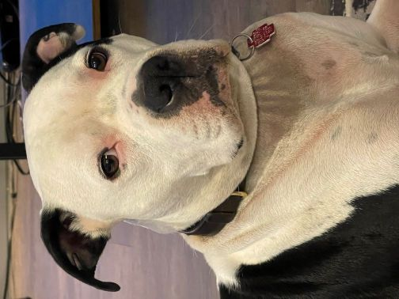

Ali's Study Buddy


An acheivement for me was the pursuit of education in my 50's. While sitting in class with people almost a 1/3 my age can be intimidating, i enjoy the learning. A great asset to my education is Hercules! He helps me focus and study (not really). He's a great boy with a fun personality, he loves hugs and expensive steak. Considering its his first time in school he's doing great at Illinois Tech! Most of the development is actually done with him. When i get something right, he chases his tail. When i need help, he jumps on me (he still thinks he's a puppy).

Hercule's dad has his highly judgemental face, his mom was supposed to be quite a looker too, but she started doing instagram modeling and no one has seen hide nor hair of her since. Rumor has it shes running a puppy mill!

Hercles has more blankets than me, he also insists that my sheets on an as-needed-basis have to be unfolded, slept in, and left rumpled on the floor. In the above picture submitted as evidence, please note that after 18 months of continuous training and lots of napping, my boy has mastered the art of couch bed stealing, and using a pillow!